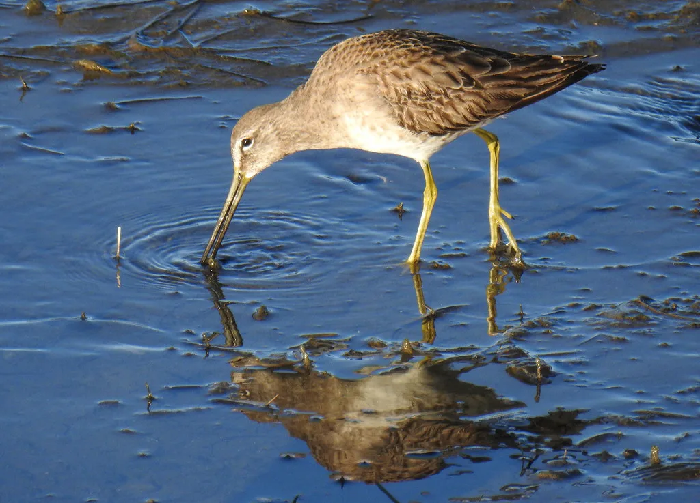
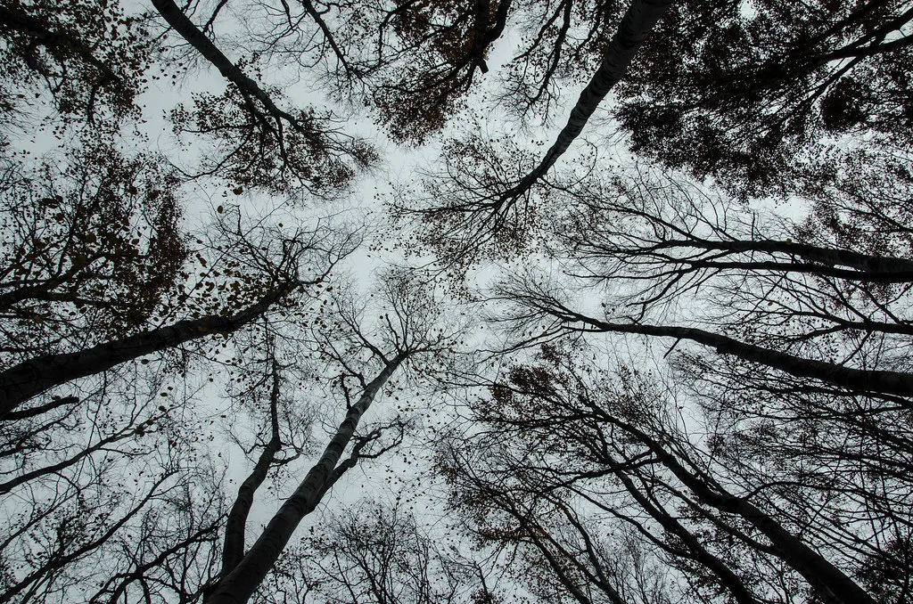
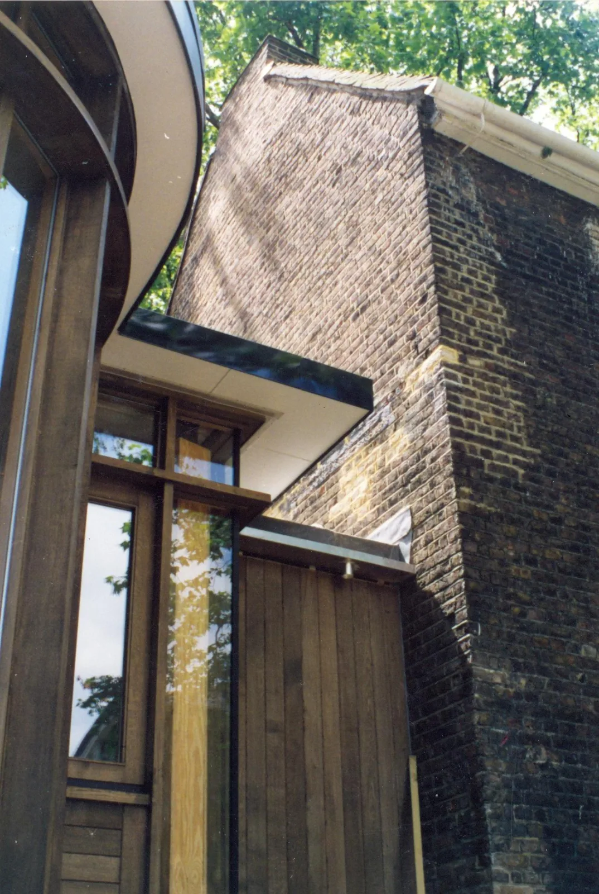

필요한 길이의 세 배를 받습니다. 편집에서 잘라내는 편이 붙이는 것보다 낫습니다.
노이즈 리덕션은 마지막 수단입니다. 대부분은 마이크를 30cm 옮겨 해결합니다.
라이브러리를 팔지 않습니다. 프로젝트마다 새로 녹음합니다.

완료 만조 3시 17분 필드 레코딩48kHz 조수가 가장 높은 순간의 갯벌을 6시간 무편집으로.
완료 숲의 층 앰비소닉4채널 같은 자리에서 높이만 바꿔 네 번 녹음. 완료 얼음이 우는 밤 접촉 마이크 호수 얼음에 마이크를 직접 붙였습니다. 운영중 도시의 새벽 네 시 도시 앰비언스 차가 끊긴 시간의 도로 소음만. 운영중 빗소리 라이브러리 효과음240트랙 비의 세기와 표면을 조합해 240가지로.
완료 들리지 않는 것 설치 음향12채널 관람객 위치에 따라 소리가 바뀝니다.장비 목록을 공개하는 이유는 간단합니다. 같은 장비로 왜 다른 소리가 나는지 이야기하고 싶어서입니다.
장소에 하루 머물며 시간대별로 시험 녹음을 합니다. 여기서 갈지 말지를 정합니다.
필요한 길이의 세 배를 받습니다. 날씨가 나쁘면 일정을 미루고 다시 갑니다.
고른 소리를 붙이고 채널 배치를 잡습니다. 노이즈 리덕션은 마지막 수단입니다.
원본과 마스터를 함께 드립니다. 원본은 3년간 보관합니다.